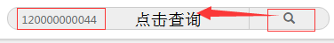

探霸系统：使用指南
专属装置使用说明1/6
1、专属装置不动的情况下按照一定频率和服务器通信。
2、专属装置晃动的情况下会立即发生1次通信。
3、连续按≥2次专属设备上的按钮，会发送紧急信号，专属装置会闪烁红光，系统自动处理后恢复正常。
专属装置界面--雷达区域 2/6
1、雷达模块：收到专属装置发送的信息会显示在雷达区域，此区域显示1分钟内收到的全部信息。
2、信息状态：显示信号状态，常见状态有2种：专属装置的信号状态（正常）为浅蓝色，紧急为红色。
3、二维码：点击上图标记图标，可显示二维码，手机扫码后可登陆手机雷达界面。
专属装置界面--信息列表区域 3/6
1、雷达信息列表：显示专属装置发送的详细信息（时间、特征码、信号强度、状态），新信息出现在第一行
2、接收模式：点击黄色按钮，切换接收模式
3、搜索模块：在文本框框中输入特征码（不点击搜索的情况下），如若信息列表中有输入的特征码的信息，将会被置顶，固定显示在第一排，颜色为红色加粗字体，如图。
专属装置界面--搜索指定特征码 4/6
1、在文本框框中输入特征码，然后点击搜索按钮，直接跳转的结果列表页面（如小图）
2、显示搜索专属设备近段时间发送的所有信息，发送信息的时间。（如大图）
专属装置界面--专属设备紧急信号的提示 5/6
1、专属设备发送紧急信号后，在界面上会显示出来，如上图红色“紧急”，处理前一直显示。
2、处理紧急信号，可点击左上方标记出来的位置。
专属装置界面--专属设备紧急信号的处理 6/6
点击紧急区域，出现弹窗，点击处理，完成处理。界面上的状态恢复为正常。
2.4g数据雷达模块 1/3
1、雷达区域：收到探霸探测到的手机相关信息会显示在雷达区域，此区域显示5分钟内收到的全部信息。
2、信息状态区域：显示信号状态，常见状态有2种：正常的信号状态为黄色，超时后的信号状态为灰色
3、使用指南入口：点击进入雷达界面使用指南
4、二维码入口：点击上图标记图标，可显示二维码，手机扫码后可登陆手机雷达界面。

2.4g数据列表模块 2/3
1、雷达列表：显示探霸发送的详细手机的2.4g信息（时间、品牌、特征码、信号强度、发现次数），新信息出现在第一行
2、接收模式：点击黄色按钮，切换接收模式；设备信号为探霸的id
3、搜索模块：在文本框框中输入特征码（不点击搜索的情况下），如若信息列表中有输入的特征码的信息，将会被置顶，固定显示在第一排，颜色为红色加粗字体，如图。
2.4g数据搜索模块--搜索指定特征码 3/3
1、在文本框框中输入特征码，然后点击搜索按钮，直接跳转的结果列表页面（如小图）

2、显示搜索到的手机设备近段时间被探霸探测到的所有信息。（如大图）
电子设备数据雷达模块 1/2
1、雷达区域：收到探霸探测到的手机相关信息会显示在雷达区域，此区域显示5分钟内收到的全部信息。
2、信息状态区域：显示信号状态，常见状态有2种：正常的信号状态为黄色，超时后的信号状态为灰色
3、使用指南入口：点击进入雷达界面使用指南
4、二维码入口：点击上图标记图标，可显示二维码，手机扫码后可登陆手机雷达界面。
电子设备数据列表模块 2/2
1、雷达列表：显示探霸发送的详细手机的信息（时间、品牌、特征码、信号强度、发现次数），新信息出现在第一行
2、接收模式：点击黄色按钮，切换接收模式；设备信号为探霸的id